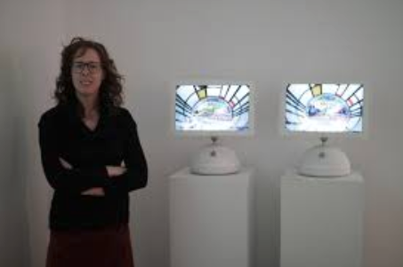

Lorna Mills
Lorna Mills is a net artist based in Canada.
She has been exhibiting work since the 1990s and makes a wide range of work from prints and painting to gifs and video.
Lorna Mills website
Artworks
---
Ways of Something

'Ways of Something' is a contemporary remake of John Berger’s BBC documentary, “Ways of Seeing” (1972).
Ways of Something websiteWays of Seeing website
Ways of Seeing episode 1
---
Caughtinmoment

'Caughtinmoment' uses whitney.org as the basis to show a gif of the sunrise/sunset at the appropriate time.
Caughtinmoment website---
At Play in the Fields of the Lord

'At Play in the Fields of the Lord' features an installation of selected gif works.
Exhibition website---
Mountain Light/Time
'Mountain Light/Time' was part of Midnight Moment in Times Square NYC.
Times Square Midnight Moment website